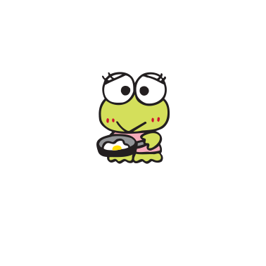
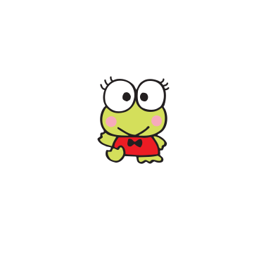
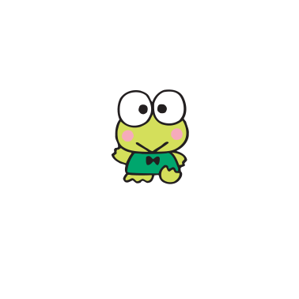
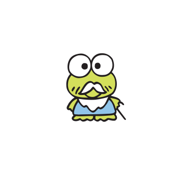
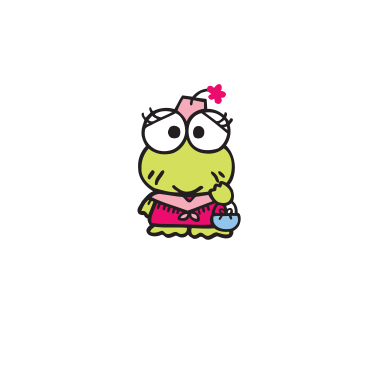

Family 케로피의 가족들이에요!
-

아빠 케로피의 아빠.
의사 선생님이며 낚시를 좋아합니다. -

엄마 케로피의 엄마.
특기는 요리이고, 작은 레스토랑을 운영하고 있어요. -

피키 케로피의 누나.
나무를 오르는 것과 요리하는 것을 좋아해요.
엄마의 레스토랑에서 일을 돕고 있어요. -

고로피 케로피의 남동생. 기계를 다루는 것과 노래하는 것을 좋아해요.
케로피와 똑같이 닮아서 종종 케로피로 오해를 받기도 해요. -

할아버지 케로피의 할아버지. 흰 수염을 길게 길렀으며 지팡이를 지고 다녀요.
케로피 삼남매와 친하며 아는 게 많아요. -

할머니 케로피의 할머니